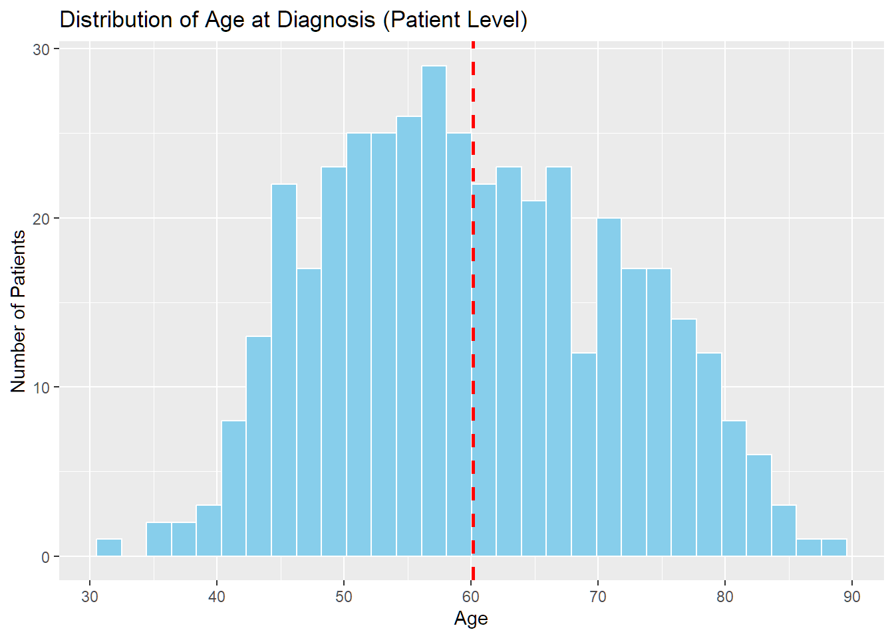
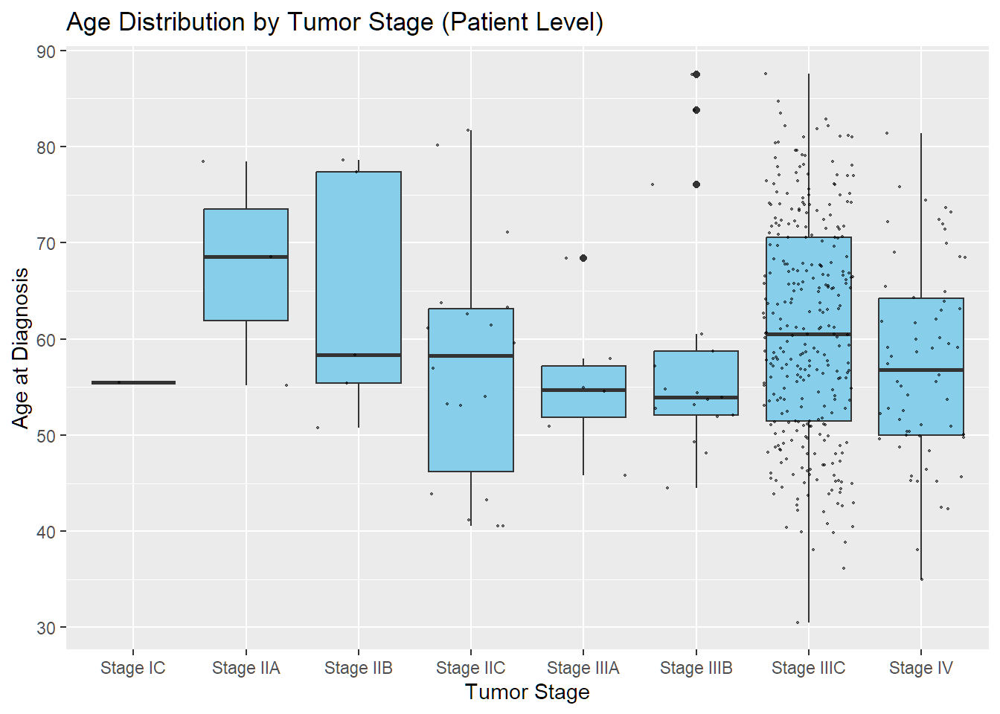
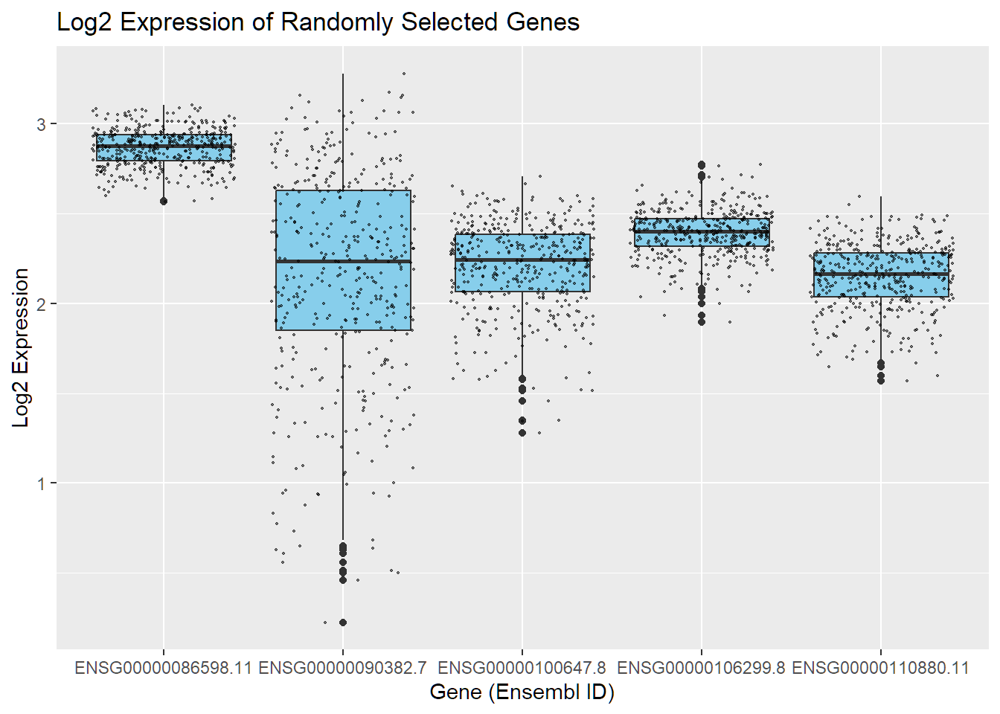
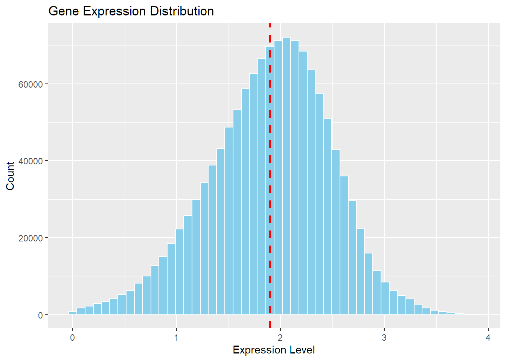
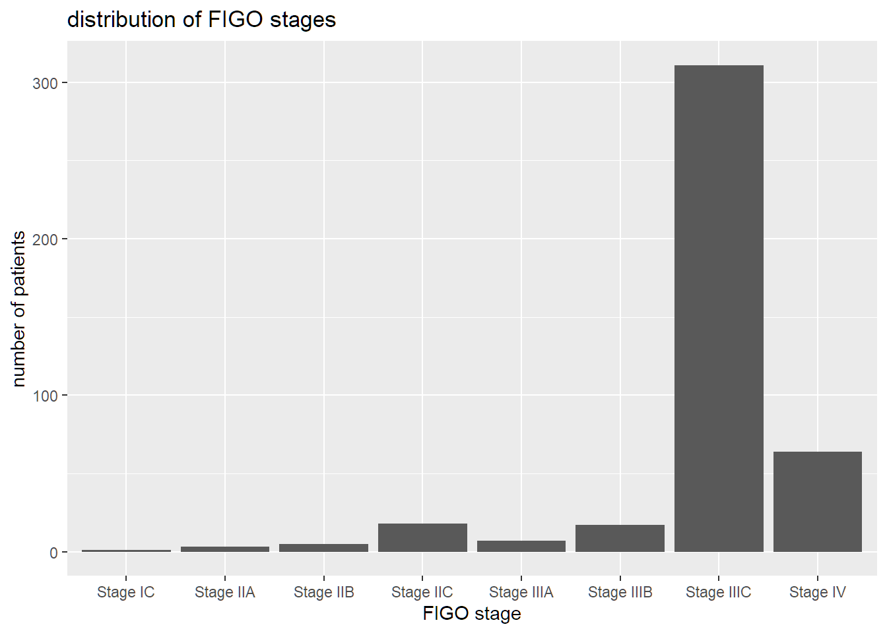
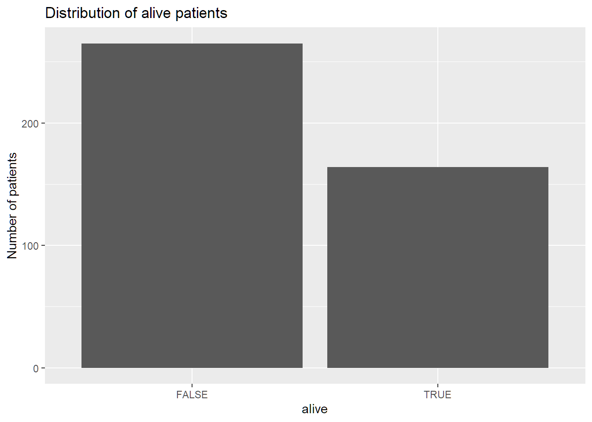
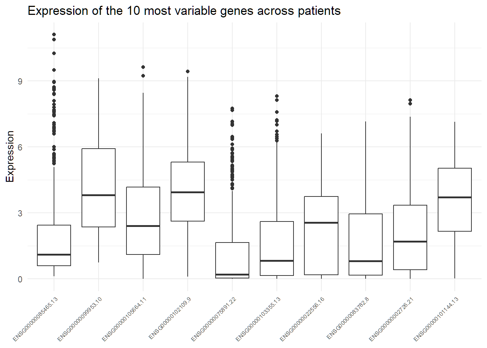
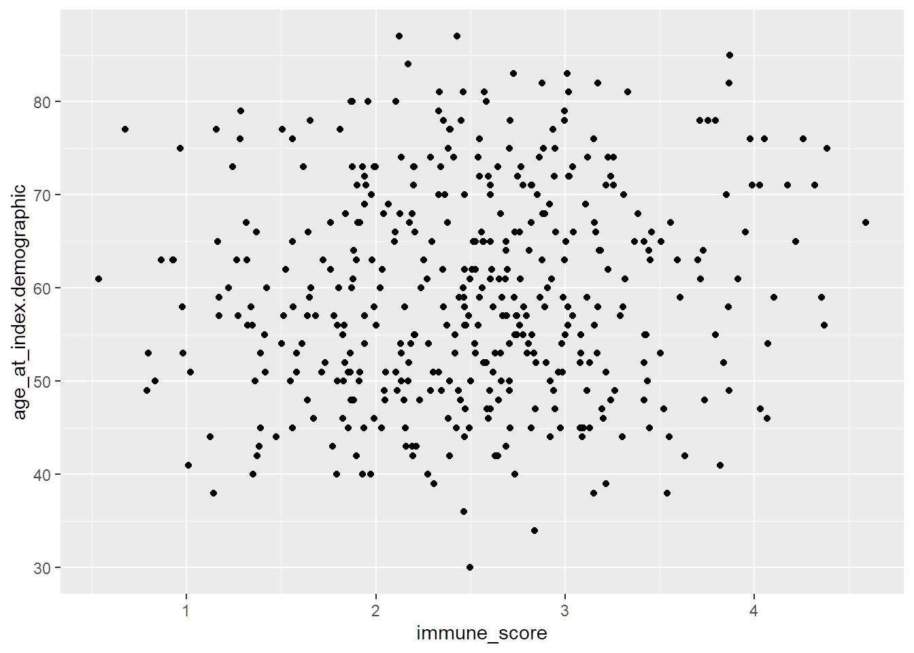
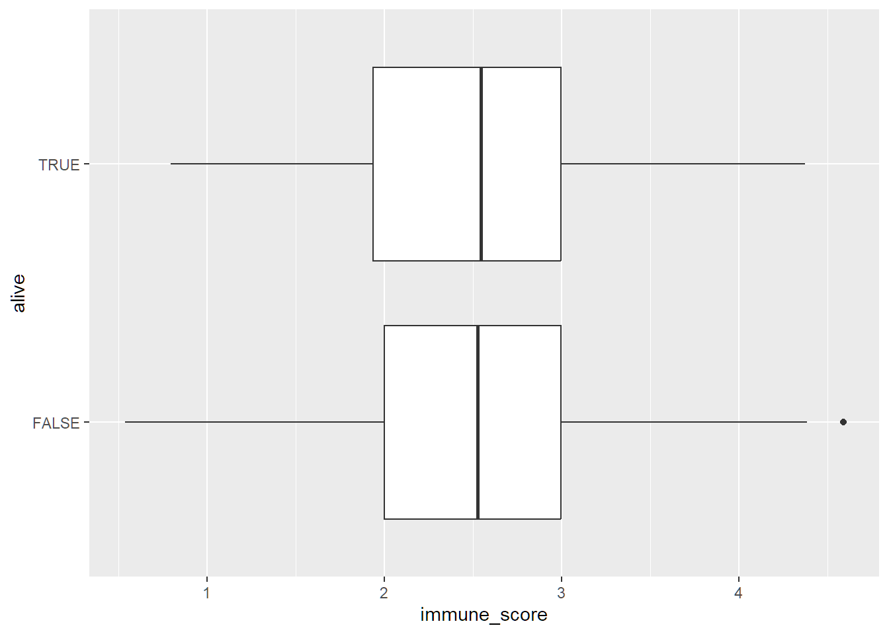
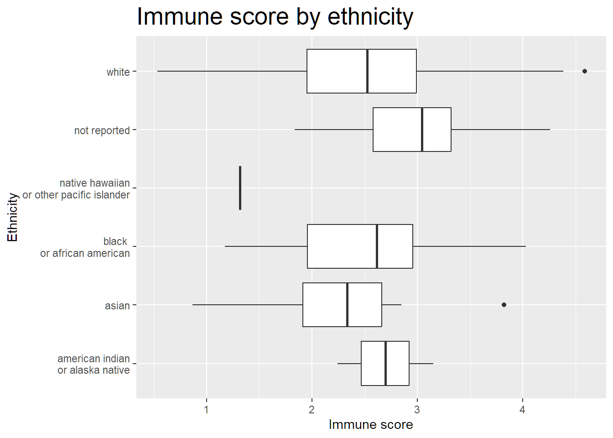

Rows: 3950 Columns: 430
── Column specification ────────────────────────────────────────────────────────
Delimiter: "\t"
chr (1): Ensembl_ID
dbl (429): TCGA-24-1104-01A, TCGA-25-1320-01A, TCGA-24-1850-01A, TCGA-61-210...
ℹ Use `spec()` to retrieve the full column specification for this data.
ℹ Specify the column types or set `show_col_types = FALSE` to quiet this message.
Rows: 632 Columns: 84
── Column specification ────────────────────────────────────────────────────────
Delimiter: "\t"
chr (65): sample, id, disease_type, case_id, submitter_id, primary_site, alc...
dbl (17): age_at_index.demographic, days_to_birth.demographic, year_of_birth...
lgl (2): oct_embedded.samples, is_ffpe.samples
ℹ Use `spec()` to retrieve the full column specification for this data.
ℹ Specify the column types or set `show_col_types = FALSE` to quiet this message.
# Save lighter versions for later stepssaveRDS(phenotype, "../data/phenotype.rds")saveRDS(gen_exp, "../data/gen_exp.rds")
We have 60600 observations (rows) and 430 variables (columns). The rows are the different genes and the columns are the samples. We have 60600 genes (that is too much) and we can see that some of them are 0 for all the samples. So we want to delete all the gene with no expression for each sample.
We can see that a lot of genes have the sum around 0 (with the boxplot). In the histogram, the binwidth is 100 and 4 bars are higher than the others and correspond to irelevant genes. So we can choose a treshold of 400. There are 431 samples so a threshold of 400 means that in average, apromimativelly all the genes expressions are higher than 1.
We start by loading the “phenotype” table, with the raw clinical data. The slice_sample allows to see 20 random samples and start evaluating which variables (columns) will be useful
We start by removing some unuseful variables, such as:
“id”, “case_id”, “tissue_source_site_id.tissue_source_site”, “entity_id.annotations”, “annotation_id.annotations” and other:
They are long lists of seemingly random characters, useful for identification of the sample but not for analysis, as we have no information on their meaning.
We’ll use “sample” as identification.
“submitter_id”, “entity_submitter_id.annotations” :
They are the same as “sample” without the last 3 characters. This is repetitive and untidy.
# Shows how some variables repeat the same information phenotype |>select(c(sample, submitter_id)) |>slice_sample(n =20)
“primary_site”, “primary_site.project”, “project_id.project”, … : These columns contain the same observation for each row, and will not be useful for analysis either.
For example “gender.demographic” will always be “female”, as we are studying ovarian cancer.
“entity_type.annotations” , “state.annotations”, … : These are empty or always the same when not empty. Samples might come from different sources, which would explain irregular conventions. After careful reading of the table, we can say that the fact that some observations are left empty has no other meaning.
# Shows variables with repeated or empty observations phenotype_clean |>select(c(entity_type.annotations, state.annotations, status.annotations)) |>slice_sample(n =20)
The samples with a disease_type value other than “Cystic, Mucinous and Serous Neoplasms” miss a lot of other information (NA in other columns). We will not keep them as there are only 8 samples and will disturb analysis without providing new information. It now makes no sense to keep this column.
# Check for other disease types phenotype_clean |>filter(disease_type !="Cystic, Mucinous and Serous Neoplasms")
# A tibble: 8 × 51
sample disease_type alcohol_history.exposures race.demographic
<chr> <chr> <chr> <chr>
1 TCGA-01-0633-11A Not Reported <NA> <NA>
2 TCGA-01-0628-11A Not Reported <NA> <NA>
3 TCGA-01-0630-11A Not Reported <NA> <NA>
4 TCGA-01-0631-11A Not Reported <NA> <NA>
5 TCGA-01-0637-11A Not Reported <NA> <NA>
6 TCGA-01-0636-11A Not Reported <NA> <NA>
7 TCGA-01-0642-11A Not Reported <NA> <NA>
8 TCGA-01-0639-11A Not Reported <NA> <NA>
# ℹ 47 more variables: ethnicity.demographic <chr>,
# vital_status.demographic <chr>, age_at_index.demographic <dbl>,
# days_to_birth.demographic <dbl>, year_of_birth.demographic <dbl>,
# days_to_death.demographic <dbl>, year_of_death.demographic <dbl>,
# code.tissue_source_site <chr>, name.tissue_source_site <chr>,
# bcr_id.tissue_source_site <chr>, notes.annotations <chr>,
# submitter_id.annotations <chr>, classification.annotations <chr>, …
# Remove samples with missing values phenotype_clean <- phenotype_clean |>filter(disease_type =="Cystic, Mucinous and Serous Neoplasms")# Remove this columnphenotype_clean <- phenotype_clean |>select(!disease_type)
The column prior_treatment.diagnoses is Not Reported or No for every samples except one Yes. This column will not be useful.
# Show values other than "Not Reported" and "No" for prior_treatment.diagnosesphenotype_clean |>filter(prior_treatment.diagnoses!="Not Reported"& prior_treatment.diagnoses !="No") |>relocate(prior_treatment.diagnoses, .before =1)
Some variables don’t always contain the same information on paper, but further analysis shows us that the observations are very similar. For example alcohol_history.exposures is “Not reported” or NA:
# Show NAs in alcohol_history.exposuresphenotype_clean |>filter(is.na(alcohol_history.exposures))
The current gene expression dataset is in a wide format:
rows = genes columns = samples
For further analyses, it is more convenient to work in a long format: one row per (gene × sample) measurement. The dataset is now tidy.
The analysis will be based on the article Comparison of gene expression patterns across twelve tumor types identifies a cancer supercluster characterized by TP53 mutations and cell cycle defects. The datasets used in the article are from the The Cancer Genome Atlas (TCGA) ovarian cancer collection. In the article, compares gene-expression profiles across multiple tumor types to identify transcriptional superclusters.
Two different data sets are used:
A clinical dataset: TCGA-OV.clinical.tsv
A gene expression dataset: TCGA-OV.star_fpkm.tsv
The clinical and transcriptomic datasets for the TCGA ovarian cancer cohort will be used to search for gene expression associations with clinical variables and outcomes.
2. Dataset descriptions
Clinical dataset
Format: Tab-separated values (TSV) file.
Contains clinical variables from the TCGA ovarian cancer cohort. As it contains observations about the patients, it is called phenotype in this project.
Size: There are 632 patients as rows and 84 clinical variables as columns.
Key variables and data types: The following variables are most relevant for the analysis, - alive (bool),
figo_stage.diagnoses (chr),
morphology.diagnoses (chr, the first part encodes the tumor type, the second part encodes the malignancy),
treatment_type.treatments.diagnoses (chr, indicating the type of treatement),
Needed cleaning: The dataset contains a lot of redundant variables (e.g. many instances of a variable indicating the ID), many have been combined into a single one or have been removed altogether. Also the variable containing information about the gender has been removed as all patients with ovarian cancer are female. Some variables contain annotations to the patients, but as most are empty and irrelevant for the analysis they have been removed as well.
Size after cleaning: 624 patients on the rows, 52 clinical variables on the columns.
Underneath, 10 randomly selected rows of the set are shown to understand the structure:
phenotype_clean |>slice_sample(n=10)
# A tibble: 10 × 49
sample race.demographic ethnicity.demographic alive age_at_index.demogra…¹
<chr> <chr> <chr> <lgl> <dbl>
1 TCGA-30-… white not hispanic or lati… FALSE 61
2 TCGA-04-… black or africa… not reported FALSE 57
3 TCGA-61-… white not hispanic or lati… TRUE 52
4 TCGA-13-… white not hispanic or lati… FALSE 68
5 TCGA-30-… white not hispanic or lati… FALSE 74
6 TCGA-61-… white not hispanic or lati… TRUE 42
7 TCGA-24-… white not reported FALSE 54
8 TCGA-24-… white not reported FALSE 53
9 TCGA-23-… white not hispanic or lati… TRUE 74
10 TCGA-61-… white not hispanic or lati… TRUE 46
# ℹ abbreviated name: ¹age_at_index.demographic
# ℹ 44 more variables: days_to_birth.demographic <dbl>,
# year_of_birth.demographic <dbl>, days_to_death.demographic <dbl>,
# year_of_death.demographic <dbl>, code.tissue_source_site <chr>,
# name.tissue_source_site <chr>, bcr_id.tissue_source_site <chr>,
# notes.annotations <chr>, submitter_id.annotations <chr>,
# classification.annotations <chr>, created_datetime.annotations <chr>, …
Gene expression dataset
Format: Tab-separated values (TSV) file.
Contains gene expression data (FPKM) from the TCGA ovarian cancer cohort.
The values are FPKM (Fragments Per Kilobase of transcript per Million mapped reads) which is a normalized gene-expression metric.
Size: There are 60660 genes on the rows and 430 samples on the columns.
Data types: numeric non‐negative values
Needed cleaning: Some genes have a null expression level for all samples, these genes have been removed from the dataset. To further reduce the number of genes and keep only the most relevant ones, the summed expression level over all samples for each gene has been computed and the relevant genes were kept based on a threshold. A variable representing this sum of the expression levels for each gene has been added.
Size after cleaning: 14157 genes on the rows, 431 variables on the columns.
Underneath, 10 randomly selected rows of the set are shown to understand the structure:
These two datasets have been combined to one by matching the patient IDs (samples). As the two datasets do not show the same amount of samples (the phenotype dataset is bigger than the gene expression dataset), the IDs that could not be resolved between the two sets have been removed. This leaves only patients who have recorded gene expression data (no gene expression data is lost).
Two variables have been added: - log2_expression (numeric, gene expression on logarithmic scale) - age_cat (chr, age category the patient belongs to: young, middle, senior)
In addition to the key variables mentioned for the phenotype (clinical) data and the gene expression values from the gene expression data, these two variables will allow for easier visualization and analysis.
In the figo_stage.diagnoses variable, the tumor stages IA, IB and the majority of IC have disappeared after joining. This is due to the fact that it it rare to have gene expression data for early stage cancers.
Underneath, the 10 first rows of the joined set are shown to understand the structure:
data_augmented |>head(10)
# A tibble: 10 × 53
sample Ensembl_ID expression race.demographic ethnicity.demographic alive
<chr> <chr> <dbl> <chr> <chr> <lgl>
1 TCGA-24-1… ENSG00000… 0.918 white not reported FALSE
2 TCGA-25-1… ENSG00000… 1.29 white not hispanic or lati… FALSE
3 TCGA-24-1… ENSG00000… 0.522 white not reported TRUE
4 TCGA-61-2… ENSG00000… 1.62 white not hispanic or lati… FALSE
5 TCGA-23-1… ENSG00000… 0.658 white not reported TRUE
6 TCGA-25-2… ENSG00000… 0.374 white not hispanic or lati… FALSE
7 TCGA-30-1… ENSG00000… 0.515 white not hispanic or lati… FALSE
8 TCGA-04-1… ENSG00000… 0.694 white not hispanic or lati… TRUE
9 TCGA-59-2… ENSG00000… 0.372 white not hispanic or lati… TRUE
10 TCGA-09-1… ENSG00000… 0.544 white not hispanic or lati… FALSE
# ℹ 47 more variables: age_at_index.demographic <dbl>,
# days_to_birth.demographic <dbl>, year_of_birth.demographic <dbl>,
# days_to_death.demographic <dbl>, year_of_death.demographic <dbl>,
# code.tissue_source_site <chr>, name.tissue_source_site <chr>,
# bcr_id.tissue_source_site <chr>, notes.annotations <chr>,
# submitter_id.annotations <chr>, classification.annotations <chr>,
# created_datetime.annotations <chr>, updated_datetime.annotations <chr>, …
3. Quality and intergrity
In the phenotype datasets, a few columns containing only NAs have been removed. Some of the variables contained a label “Not Reported” instead of NA. As described above, many variables described redundant information and needed to be removed.
The gene expression dataset is of good quality and integrity, the only correction needed was to remove uninformative genes.
Overall the data seems of good quality without aberrant values or errors in the writing of the sets.
4. Visualisation
The following graphs will allow to visualize the content of the data set.
A list of the variables contained in the full dataset:
The graph is a histogram showing the distribution of patient age at diagnosis.
patient_level <- data_augmented |>distinct( sample,age = age_at_earliest_diagnosis_in_years.diagnoses.xena_derived ) |>filter(!is.na(age))patient_level |>ggplot(aes(x = age)) +geom_histogram(bins =30, fill ="skyblue", color ="white") +geom_vline(aes(xintercept =mean(age)), color ="red",linetype ="dashed", size =1) +theme_minimal() +labs(title ="Distribution of Age at Diagnosis (Patient Level)",x ="Age",y ="Number of Patients" )
Warning: Using `size` aesthetic for lines was deprecated in ggplot2 3.4.0.
ℹ Please use `linewidth` instead.

ggsave("../doc/images/age.png")
Saving 7 x 5 in image
The age of patients at diagnosis seems to be normally distributed with a mean (red line) at around ~60 years.
Age distribution at tumor stage
Tumor stages IA, IB and the majority of IC have disappeared after joining the initial two datasets. Most patients, out of those which also have gene expression data, have ovarian cancer stage IIIC. There are very few data points for stages IC, IIA, IIB and IIIA.
# Collapse to one row per patientpatient_level <- data_augmented |>distinct( sample,figo_stage = figo_stage.diagnoses,age = age_at_earliest_diagnosis_in_years.diagnoses.xena_derived ) |>filter(!is.na(age), !is.na(figo_stage))patient_level |>ggplot(aes(x = figo_stage, y = age)) +geom_boxplot(fill ="skyblue") +geom_jitter(color="black", size=0.4, alpha=0.5) +theme_minimal() +labs(title ="Age Distribution by Tumor Stage (Patient Level)",x ="Tumor Stage",y ="Age at Diagnosis" )

The graph shows how age at diagnosis varies across different tumor stages. Stage IIB, IIC, IIIC, and IV show wide spreads in age, meaning patient ages vary a lot within those groups. As seen in the table above, there are few data points for stages IC, IIA, IIB and IIIA. There are some outliers, especially in Stage IIIB.
Boxplot across all samples of a set of genes
The graph displays boxplots representing the distribution of gene expression levels for five randomly selected genes.
# Pick 5 random genesrandom_genes <- data_augmented |>distinct(Ensembl_ID) |>sample_n(5) |>pull(Ensembl_ID)# Filter the data for the chosen genessubset_data <- data_augmented |>filter(Ensembl_ID %in% random_genes)subset_data |>ggplot(aes(x = Ensembl_ID, y = log2_expression)) +geom_boxplot(fill ="skyblue") +geom_jitter(color="black", size=0.4, alpha=0.5) +theme_minimal() +labs(title ="Log2 Expression of Randomly Selected Genes",x ="Gene (Ensembl ID)",y ="Log2 Expression" )

The graph provides a glance on the gene expression of a selection of 5 genes.
Histogram of gene expression levels
data_augmented |>ggplot(aes(x = log2_expression)) +geom_histogram(bins =50, fill ="skyblue", color ="white") +geom_vline(aes(xintercept =mean(log2_expression)), color ="red",linetype ="dashed", size =1) +theme_minimal() +labs(title ="Gene Expression Distribution",x ="Expression Level",y ="Count")

The mean log2 gene expression level is at around 1.8. It seems to be normally distributed.
The bar plot shows the distribution of patients across FIGO stages. From the plot, it is clear that the majority of patients are classified as stage IIIC, while the numbers in other stages (stage IC, IIA, IIB, IIC, IIIA, IIIB, IIIC and IV) are considerably lower. This uneven distribution suggests that most patients in this dataset were diagnosed at an advanced stage of disease, which is common for ovarian cancers due to late detection. Because the dataset is heavily skewed toward Stage III, it is difficult to draw meaningful comparisons between stages or to identify trends related to clinical outcomes across the full spectrum of FIGO stages.
data_augmented |>group_by(sample) |>slice(1) |>filter(!is.na(figo_stage.diagnoses)) |>ggplot(aes(x = figo_stage.diagnoses)) +geom_bar() +labs(title ="distribution of FIGO stages",x ="FIGO stage",y ="number of patients")

Alive or death status
The bar plot shows the distribution of patients classified as “alive” or “dead” in the dataset. While the plot provides a visual overview of survival status, the interpretation is limited because we lack detailed information about the causes of death, the timing of events, or the follow-up duration. Without this contextual information, it is not possible to draw meaningful conclusions regarding survival patterns, treatment effectiveness, or disease progression. The data simply indicate whether a patient was recorded as alive or dead at a certain point, but do not capture the underlying clinical or temporal context necessary for a robust survival analysis.
data_augmented |>group_by(sample) |>slice(1) |>ggplot(aes(x = alive)) +geom_bar() +labs(title ="distribution of alive patients",x ="alive",y ="number of patients")

Biological relevance of most variant genes
In this section we will extract the top 10 genes by variance of FPKM, found their biological signification and plotted expression values across all samples.
Finding most variant genes
# Compute variance of expression per genegene_var <- gen_exp |>rowwise() |>mutate(var_expression =var(c_across(-Ensembl_ID), na.rm =TRUE), .before =2) |>ungroup() |>arrange(desc(var_expression))# Extract top 10 genesgenes_of_interest <- gene_var |>slice_head(n =10) |>pull(Ensembl_ID) # Makes genes_of_interest a character vector with genes names
The genes are listed using their Ensembl ID, which is a unique identifier assigned by the Ensembl projects. we will convert them to gene symbols to make them more understandable.
Ensembl_ID
Gene symbol
ENSG00000211592.8
IGKC
ENSG00000211896.7
IGHG1
ENSG00000239951.1
IGKV3-20
ENSG00000211598.2
IGKV4-1
ENSG00000253755.1
IGHGP
ENSG00000211673.2
IGLV3-1
ENSG00000243466.1
IGKV1-5
ENSG00000157005.4
SST
ENSG00000211677.2
IGLC2
ENSG00000241351.3
IGKV3-11
These are all immunoglobulin genes, except for SST gene. They are expressed by B cells and plasma cells, not by tumor cells. Their high variability likely reflects differences in immune infiltration across ovarian tumor samples.
This suggests that immune involvement varies substantially among patients, which is consistent with known heterogeneity in the tumor microenvironment. In other words, different patients’ tumors contain different levels of immune cells, a result that is expected in ovarian cancer.
Expression across samples
# Boxplot of expressiongen_exp |>filter(Ensembl_ID %in% genes_of_interest) |>mutate(Ensembl_ID =factor(Ensembl_ID, levels = genes_of_interest)) |>pivot_longer(cols =-Ensembl_ID,names_to ="sample",values_to ="expression") |>ggplot(aes(x = Ensembl_ID, y = expression)) +geom_boxplot() +theme_minimal() +theme(axis.title.x =element_blank(),axis.text.x =element_text(angle =45, hjust =1, size =6 ) ) +labs(title ="Expression of the 10 most variable genes across patients",y ="Expression" )

Relationship with phenotype variables
# Joining the genes of interest expressions with phenotypejoined <- gen_exp |>filter(Ensembl_ID %in% genes_of_interest) |>pivot_longer(cols =-Ensembl_ID,names_to ="sample",values_to ="expr") |>group_by(sample) |>summarize(immune_score =mean(expr)) |>left_join(phenotype, by ="sample")
After several attempts, we found no clear relationship between these genes expressions and any patients characteristics, such as age or alive status. These plots show the lack of association between the variables.
# Immune genes vs ageggplot(joined, aes(x = immune_score, y = age_at_index.demographic)) +geom_point()

# Immune genese vs alive/deadggplot(joined, aes(x = immune_score, y = alive)) +geom_boxplot()

# Immune genes vs ageggplot(joined, aes(x = immune_score, y = race.demographic)) +geom_boxplot()

Aim
In this document, we perform an exploratory analysis of the gene expression data using Principal Component Analysis (PCA).
We use the augmented tidy dataset created in 03_augment.qmd and investigate whether patients separate in PCA space according to clinical variables such as alive status and age category.
# A tibble: 10 × 53
sample Ensembl_ID expression race.demographic ethnicity.demographic alive
<chr> <chr> <dbl> <chr> <chr> <lgl>
1 TCGA-13-1… ENSG00000… 2.85 white not hispanic or lati… FALSE
2 TCGA-36-1… ENSG00000… 0.949 white not reported TRUE
3 TCGA-09-0… ENSG00000… 6.58 white not hispanic or lati… FALSE
4 TCGA-31-1… ENSG00000… 5.60 not reported not reported TRUE
5 TCGA-31-1… ENSG00000… 2.42 white not hispanic or lati… TRUE
6 TCGA-31-1… ENSG00000… 3.02 not reported not reported TRUE
7 TCGA-24-1… ENSG00000… 4.14 white not reported TRUE
8 TCGA-20-0… ENSG00000… 1.82 white not hispanic or lati… TRUE
9 TCGA-09-1… ENSG00000… 1.26 white not hispanic or lati… FALSE
10 TCGA-29-1… ENSG00000… 3.40 white not hispanic or lati… TRUE
# ℹ 47 more variables: age_at_index.demographic <dbl>,
# days_to_birth.demographic <dbl>, year_of_birth.demographic <dbl>,
# days_to_death.demographic <dbl>, year_of_death.demographic <dbl>,
# code.tissue_source_site <chr>, name.tissue_source_site <chr>,
# bcr_id.tissue_source_site <chr>, notes.annotations <chr>,
# submitter_id.annotations <chr>, classification.annotations <chr>,
# created_datetime.annotations <chr>, updated_datetime.annotations <chr>, …
Select most variable genes
PCA is more informative when applied to genes that show substantial variation across samples. We therefore select the top 500 most variable genes based on the variance of log2_expression.
We construct a wide expression matrix with one row per sample and one column per gene (for the selected top 500 genes). We also keep a separate table with clinical covariates per sample.
This suggests that most of the global variability in the gene expression profiles is driven by a single dominant axis (PC1). Biological separation between clinical groups, if present, is therefore expected to appear mainly along PC1 or PC2.
PC1 vs PC2 coloured by clinical variables
We project each sample onto the first two principal components and colour points by alive and shape by age_cat.
There is no clear separation between alive and deceased patients along PC1 or PC2. Both groups are widely mixed across the PCA space. Similarly, the age categories do not form distinct clusters, and their points are evenly spread. Overall, the first two principal components capture variability in gene expression, but this variability does not appear to be driven by the clinical variables considered here.
Genes contributing most to PC1 and PC2
Finally, we inspect which genes contribute most to PC1 and PC2 by looking at the PCA loadings.
The genes with the largest absolute loadings on PC1 and PC2 are those that drive the main variation in the dataset. They could be further investigated in a biological context.
Conclusion
PCA on the top 500 most variable genes reveals that the major sources of transcriptomic variance do not correspond to clinical variables such as survival status or age. The first two PCs capture global variability in gene expression, but this variability appears unrelated to the metadata included here. Genes with the highest loadings drive these main axes of variation and could be investigated further to understand the underlying biological processes.
Aim
In this document we perform a simple differential expression analysis to investigate whether gene expression differs between patients who are alive versus dead at follow-up.
We use the augmented tidy dataset created in 03_augment.qmd.
# A tibble: 2 × 2
alive n
<lgl> <int>
1 FALSE 265
2 TRUE 164
Differential expression per gene
For each gene, we compare log2-transformed expression between patients who are alive (alive == TRUE) and dead (alive == FALSE) using a two-sample t-test.
Only 2 out of 14,157 genes show a significant association with vital status at an FDR threshold of 0.05, representing ~0.014% of all tested genes. This indicates that differences between alive and dead patients are very subtle at the transcriptome-wide level, consistent with our PCA results, which also showed no clear separation between the two groups.
Volcano plot
We next create a volcano plot, showing the log2 fold change versus the negative log10 adjusted p-value. Genes with FDR < 0.05 are highlighted.
The volcano plot shows that only a very small number of genes reach statistical significance after FDR correction (highlighted in blue). Most genes cluster near zero on the x-axis, indicating that log2 fold changes are extremely small between alive and dead patients. This suggests that vital status has only a weak effect on gene expression levels, consistent with our PCA results and the low number of significantly differentially expressed genes.
Top differentially expressed genes
We extract the top 20 genes with the smallest adjusted p-values.
For all three top differentially expressed genes, expression levels tend to be slightly higher in patients who are alive compared to those who are dead. However, the differences remain small in magnitude, consistent with the modest log2 fold changes observed in the volcano plot. While these genes show statistically significant associations with vital status, the effect sizes are limited, suggesting that the biological relevance may be subtle and that survival differences are unlikely to be driven by strong single-gene expression shifts.